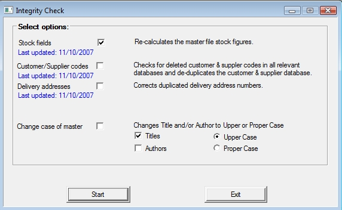

This integrity check is a part of Bookscan which enables for the re-calculating and validating of different figures within the system to ensure data accuracy. There is also the option to change the 'case' of text of titles names and authors in the title master.
 Ensure that all terminals are back to the main menu.
Ensure that all terminals are back to the main menu.
To open the integrity check on the main menu click Utilities->Database Utilities->Integrity Check.

The options, as listed in the image above with their explanation are:
· Stock fields - The fields this includes are: Backorders, Special Orders, On approval, Conignment out, Total on Order, Consignment In, Laybys.
· Update Bookscan records
· Customer/Supplier codes - This option checks for duplicate customer/supplier codes and if there are any the process temporarily stops and it displays a window where you can delete either/both or change the code of either/both.
· Delivery addresses
· Change case of master - This option allows you to change 'case' of Titles and/or Authors so there is a consistency within the title master.
The other options relating to changing of Title and/Or Author letter case format.
These are the fields from the Title Master and require the Change case of master option to be selected.
The two settiings are Upper Case (all letters in captials) and Proper Case (first letter of each word is a captial letter).
Both Author and Titles can be updated at the same time.
Step 1
It is advised that you run a re-index before running the Integrity Check.
For information on how to run a re-index, click the link.
Step 2
Select the desired options by clicking on the boxes, as Stock fields has been done in the above image.
Then click the OK button.
Step 3
Click Yes button (Having run a re-index in step 1)
If Step 1 not completed click Cancel and return to step 1.
Step 4
While running it will prompt you with the results of each option selected.
Click OK button.
If it prompts to confirm the checking of records, click Yes button.
Note: Running the integrity check can take some time depending on database size.
Step 5
When finished it will notify you that it has been completed and click OK button.
When completed it will display DONE next to the option in the list and update in blue font the date the check was last run for items.
Return To:
Stocktake - prepare database